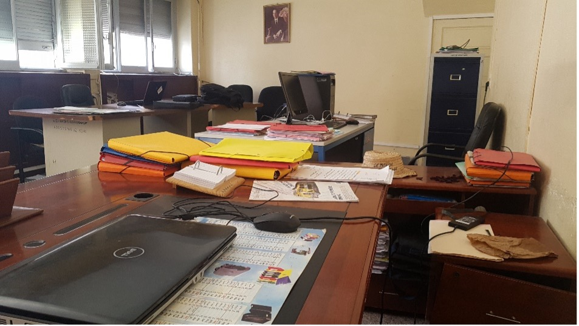
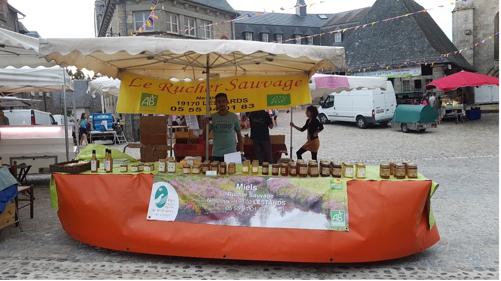
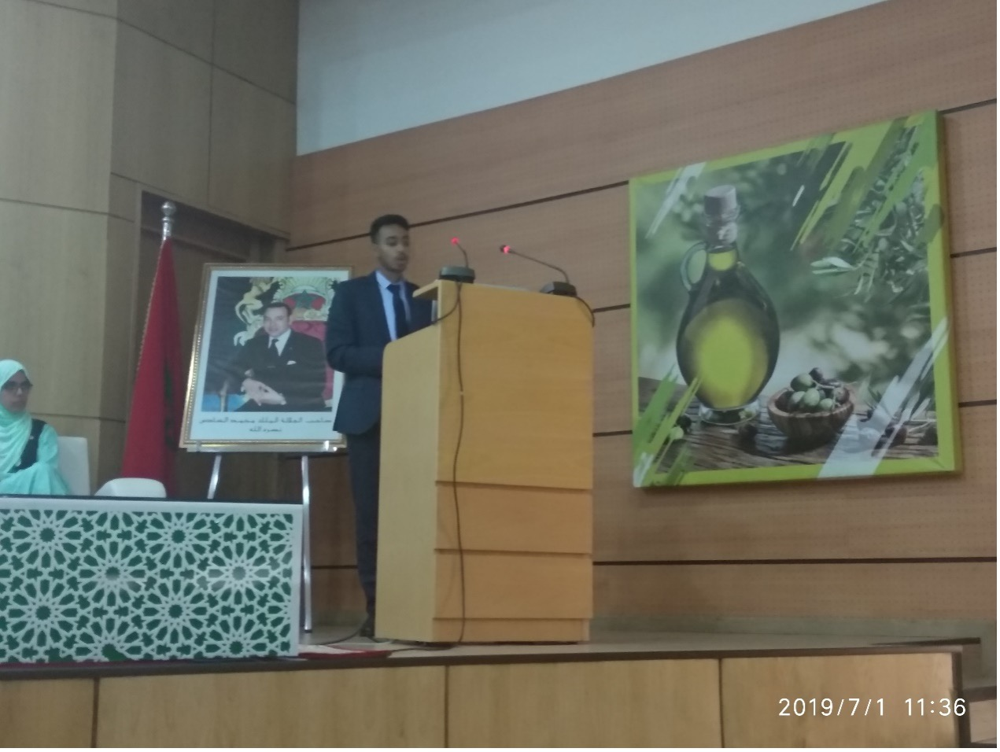

Stage en DPA de Marrakech

Ce stage réalisé au sein de la direction provinciale de l’agriculture à Marrakech durant la période entre Mai et Juin 2018 d’une période d’un mois. Mes principaux avaient lieu dans le département responsable de l’implémentation du FIDA surtout la communication avec les agriculteurs et l’organisation de leurs informations ainsi que les zones d’intervention.
Stage 250

Ce stage qui s’effectue suite à une convention entre le ministère d’agriculture marocain et celle de la France.
Ce stage de 2 mois réalisé durant la période entre le mois juin et juillet 2018 réalisé dans la commune de Lestards en France en filière apicole.
Durant cette période, j’étais amené à réaliser toutes les tâches de cette filière de la production jusqu’à la commercialisation passant par l’emballage et l’étiquetage.
En plus, je vivait chez une famille locale où j’ai améliorer ma langue parlée sans oublié le côté personnel puisque j’ai appris beaucoup sur la culture française en menant de longue discours avec M.LAURENT mon maître de stage.
Stage CFA

Le stage connaissance des filières agricoles de la deuxième année en JUIN 2019. Cet internship avait lieu pour moi dans la région Fes-Meknes en filière oléicole. Ce stage durait 15 jours où j’avait l’opportunité de suivre tout l’itinéraire de la production de l(huile d’olive soit par la méthode traditionnelle ou celle moderne. Cette expérience m’a permis de découvrir cette culture phare de notre pays et comment on a pu développer la qualité et la quantité de notre production locale.